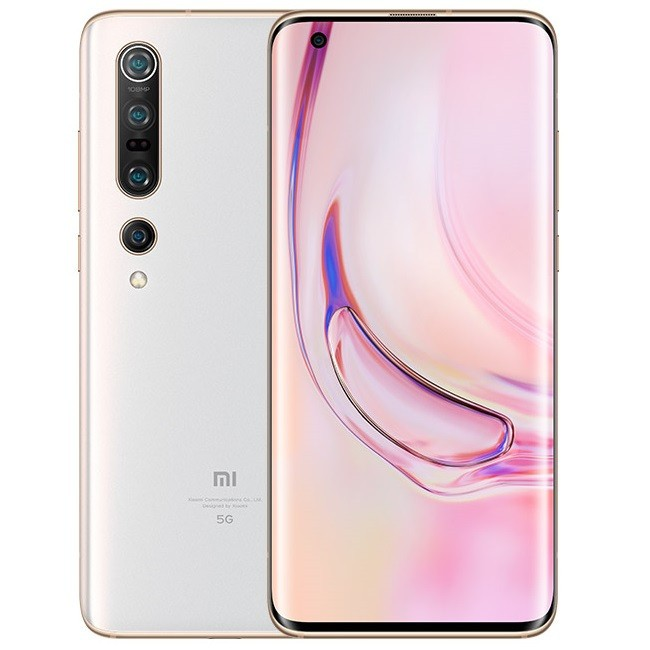

Xioami Mi 10 Pro 5G

Spesifikasi :
- Layar: Super AMOLED, 6.67 inches
- Chipset: Qualcomm SM8250 Snapdragon 865 (7 nm+)
- CPU: Octa-core (1×2.84 GHz Kryo 585 & 3×2.42 GHz Kryo 585 & 4×1.80 GHz Kryo 585)
- GPU: Adreno 650
- RAM: 8 GB, 12 GB
- Memori Internal: 256 GB, 512 GB
Ponsel 5G Xiaomi ini dirilis secara global pada bulan Februari 2020. Dengan harga yang lumayan bersaing, Mi 10 Pro 5G ditenagai oleh salah satu chipset terkuat yang ada di pasaran, yaitu Snapdragon 865 yang dibuat dengan proses manufaktur 7+ nm.
Tampilan HP ini juga sangat berkualitas. Teknologi yang dipakainya adalah Super AMOLED Full HD dengan proteksi GG5 dan dukungan sejumlah fitur, termasuk HDR10+ dan laju penyegaran 90 Hz untuk pengalaman visual yang luar biasa.
Mi 10 Pro 5G juga membawa pengaturan kamera yang hebat. Kamera utamanya adalah sensor sudut lebar 108 MP. Sisanya adalah kamera telefoto 8 MP dengan 10x zoom optik, kamera potret dengan 2x zoom optik, dan kamera ultrawide 20 MP.
HP ini juga hadir dengan baterai berkapasitas 4500 mAh yang mendukung berbagai teknologi pengisian modern, seperti pengisian cepat, pengisian nirkabel cepat, dan fungsi power bank nirkabel.
~BACK~